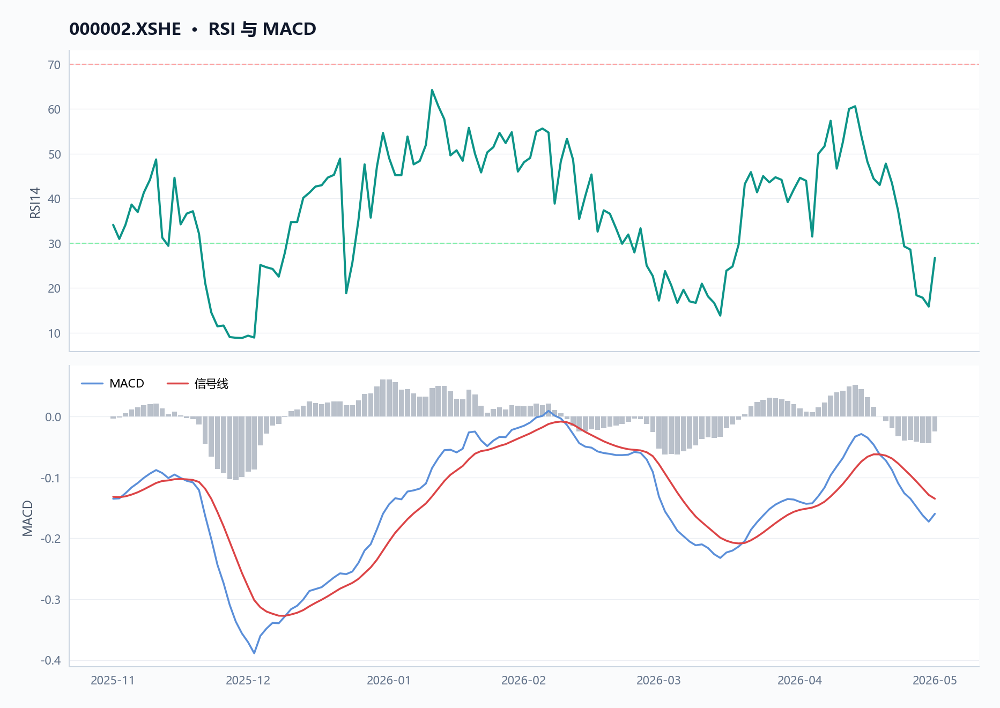
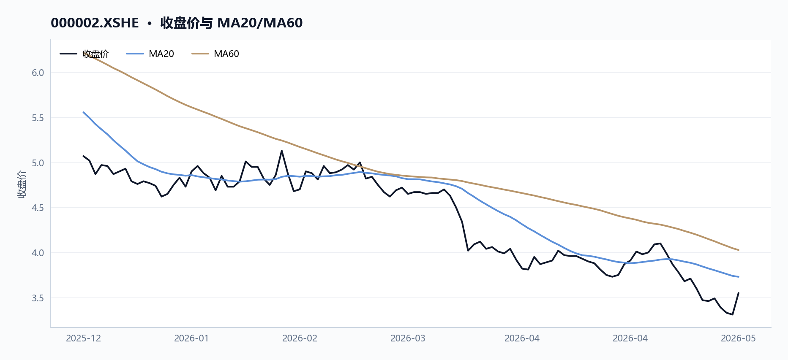
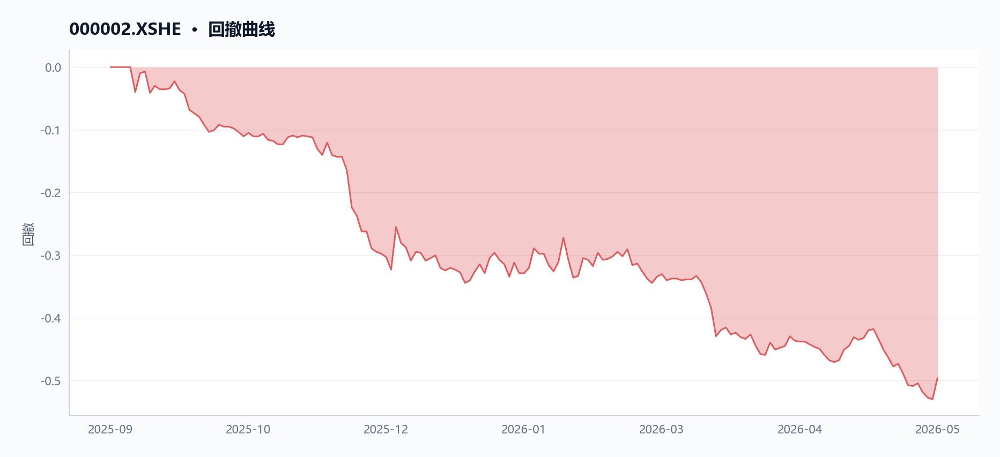
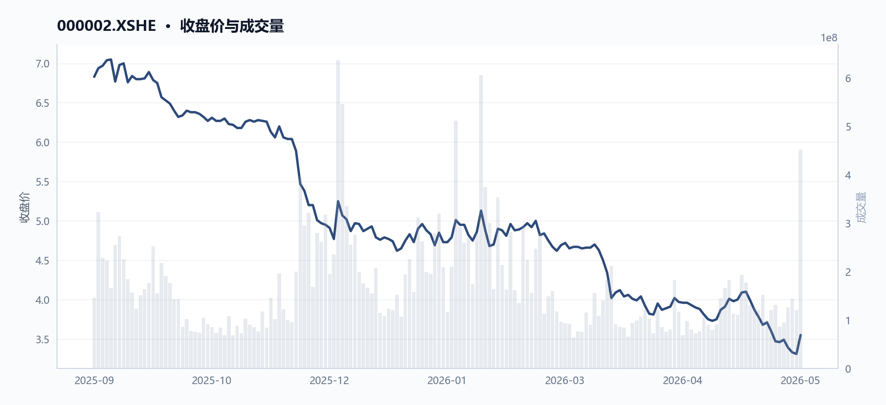
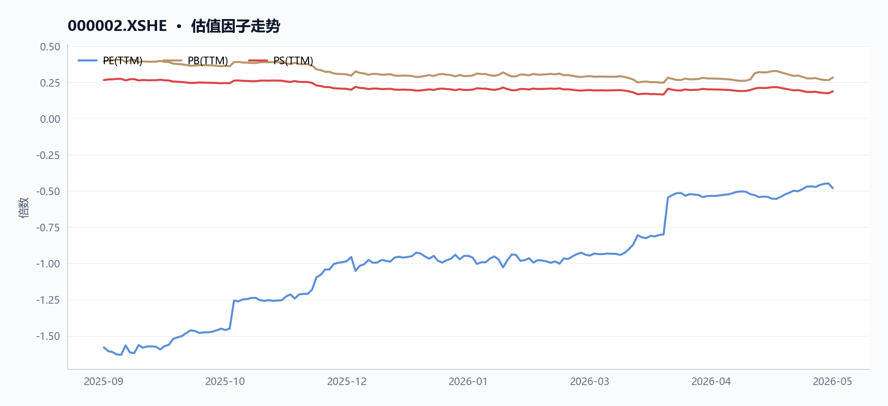
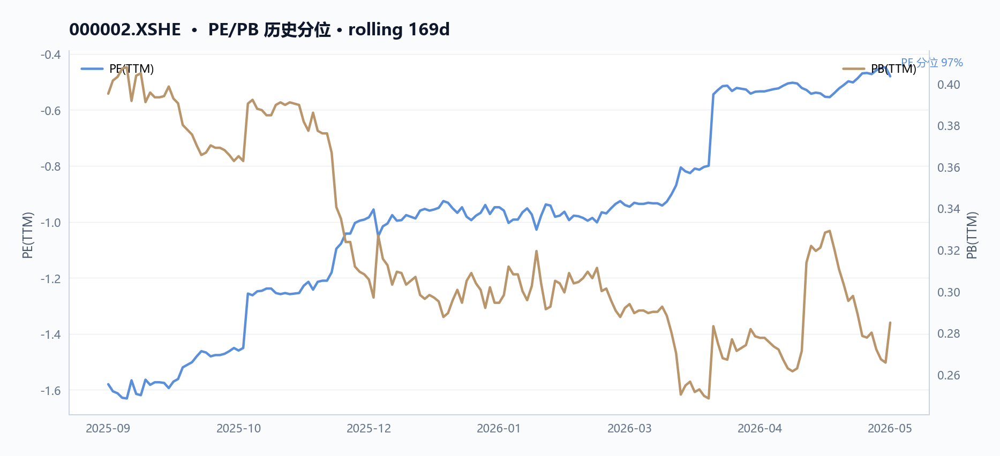
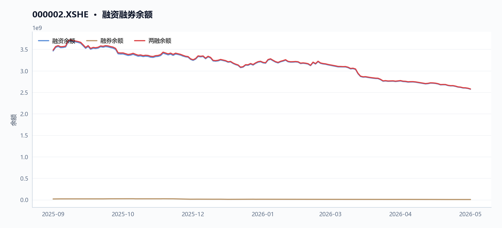
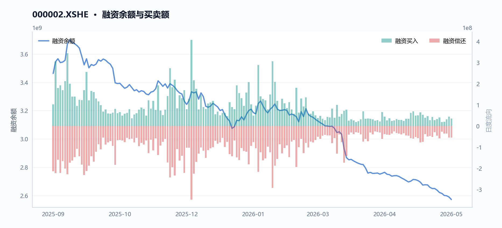
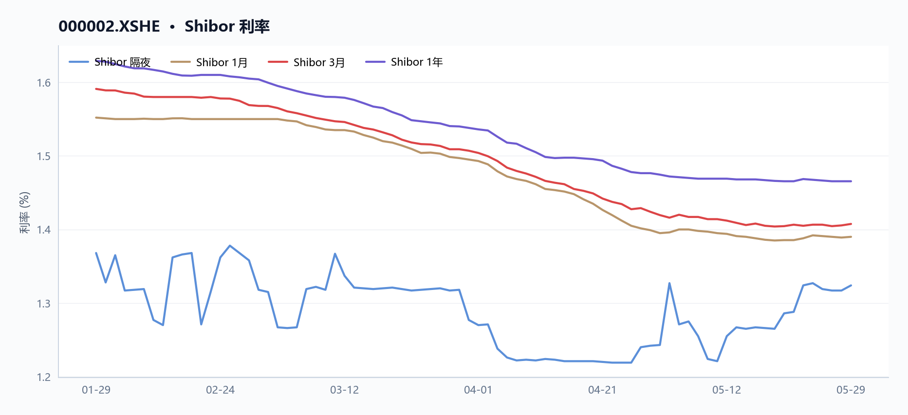
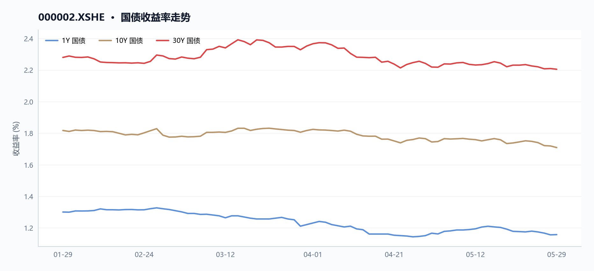

000002 万科A 多智能体研究报告
执行摘要
万科A最新收盘价3.55元，近20日下跌8.27%、近60日跌幅达23.98%，技术面RSI仅26.72已进入超卖区，但基本面持续承压——2025年归母净利润亏损88.56亿元，市净率仅0.28倍，资产负债率仍高达77.13%。5月29日单日换手率骤升至4.65%、成交额16.13亿元，同时两融余额约25.78亿元，显示多空分歧加剧。
核心指标速览
| 指标 | 数值 |
|---|---|
| 中信一级行业 | 42 |
| 最新收盘价 | 3.55 |
| MA20 | 3.7295 |
| MA60 | 4.027 |
| 20 日收益率 | -8.27% |
| 60 日收益率 | -23.98% |
| RSI14 | 26.7241 |
| 20 日均量 | 1.50 亿 |
| PE(TTM) | -0.4799 |
| PB(TTM) | 0.2849 |
| PS(TTM) | 0.1888 |
| 股息率(TTM) | 0.00% |
| 总市值 | 423.54 亿 |
| 融资余额 | 25.72 亿 |
| 融资买入额 | 3598.03 万 |
量价与技术面
核心结论
截至2026-05-29，万科A（000002.XSHE）收盘价3.55元，较60日均线折价11.85%，RSI 14为26.72，处于超卖区域，但近20日跌幅达8.27%，量价背离明显。
图 · RSI 与 MACD

RSI 处于超卖区域；MACD 位于信号线下方，动能偏弱。
表 · 技术指标快照
| 维度 | 最新收盘价 | MA20 | MA60 | 20 日收益率 | 60 日收益率 | RSI14 | 20 日均量 |
|---|---|---|---|---|---|---|---|
| 最新 | 3.55 | 3.7295 | 4.027 | -8.27% | -23.98% | 26.7241 | 1.50 亿 |
趋势概览
图 · 收盘价与 MA20/MA60

价格运行在均线之下，短中期趋势偏弱。
截至2026-05-29，万科A（000002.XSHE）收盘价3.55元，已跌破MA20（3.73元）和MA60（4.03元），呈现空头排列。近20日收益率为-8.27%，近60日收益率深跌至-23.98%，显示中期下行趋势持续。RSI 14为26.72，进入技术性超卖区间（通常低于30），表明短期抛压可能过度，但尚未出现明确反转信号。
图 · 回撤曲线

回撤经历加深后有所修复。
| 指标 | 数值 | 日期 |
|---|---|---|
| 最新收盘价 | 3.55元 | 2026-05-29 |
| MA20 | 3.73元 | 2026-05-29 |
| MA60 | 4.03元 | 2026-05-29 |
| 20日收益率 | -8.27% | 2026-05-29 |
| 60日收益率 | -23.98% | 2026-05-29 |
| RSI 14 | 26.72 | 2026-05-29 |
近期异动
2026-05-29，万科A（000002.XSHE）股价从前一日低点3.31元大幅反弹至3.55元，单日涨幅7.25%，成交量达4.51亿股，是20日均量（1.50亿股）的3.01倍，换手率显著放大。此前，股价于2026-05-28创下区间最低收盘价3.31元，当日成交量1.21亿股，低于均量，显示下跌缩量特征。
| 日期 | 收盘价 | 涨跌幅 | 成交量 | 较20日均量倍数 |
|---|---|---|---|---|
| 2026-05-28 | 3.31 | -0.60% | 1.21亿 | 0.81x |
| 2026-05-29 | 3.55 | +7.25% | 4.51亿 | 3.01x |
量价关系
图 · 收盘价与成交量

价格整体下行，成交量先抑后扬。
近20日（2026-04-29至2026-05-29），万科A（000002.XSHE）股价从3.87元跌至3.55元，跌幅8.27%，而同期成交量从1.45亿股增至4.51亿股，增幅210.89%，呈现典型的放量下跌形态，表明下跌过程中抛压与承接均较活跃。然而，在2026-05-29的反弹中，成交量急剧放大至均量的3倍，形成放量反弹，可能暗示短期资金博弈加剧。结合RSI超卖，量价关系显示市场在低位分歧加大，但趋势尚未逆转。
融资余额变化
万科A（000002.XSHE）融资余额从2025-09-11的34.63亿元下降至2026-05-28的25.72亿元，降幅25.73%，期间峰值出现在2025-12-10的4.09亿元。融资余额持续收缩，反映杠杆资金在股价下行过程中逐步离场，与价格趋势方向一致。
数据局限
- 未提供融券余额数据，无法评估融券做空力量。
- 未提供大宗交易、龙虎榜等资金流向数据，无法判断主力资金动向。
- 未提供波动率指标（如ATR、布林带宽度），无法量化价格波动幅度。
基本面与估值
核心结论
截至2026-05-29，万科A连续三年亏损且经营现金流由正转负，PE为负、PB仅0.28倍，盈利质量与偿债能力持续恶化。
表 · 最新偿债与流动性
| 维度 | 流动比率 | 速动比率 | 资产负债率 |
|---|---|---|---|
| 最新 | 1.22 倍 | 0.56 倍 | 77.13% |
盈利与成长
表 · 最新盈利质量因子
| 维度 | 毛利率(TTM) | 净利率(TTM) | ROE(TTM) |
|---|---|---|---|
| 最新 | 9.99% | -40.78% | — |
2023至2025年，万科A（000002.XSHE）营收与利润持续下滑，归母净利润由盈转亏且亏损逐年扩大。毛利率从2023年的11.1%降至2025年的9.5%，净利率从2.6%骤降至-40.8%。MD&A指出，亏损主因房地产开发项目结算规模下降、毛利率低位、信用及资产减值计提增加。如图1所示，营收增速与毛利率同步下行，反映行业下行周期中公司盈利能力的系统性恶化。
| 指标 | 2023年 | 2024年 | 2025年 |
|---|---|---|---|
| 营收（亿元） | 4657.39 | 3431.76 | 2334.33 |
| 营收同比增速 | - | -26.3% | -32.0% |
| 归母净利润（亿元） | 121.63 | -494.78 | -885.56 |
| 毛利率（TTM） | 11.1% | 10.2% | 9.5% |
| 净利率（TTM） | 2.6% | -14.4% | -40.8% |
现金流与勾稽
2025年经营现金流由正转负，收现比仅0.53，净现比接近0，利润与现金流严重背离。MD&A解释，经营活动现金净流出9.9亿元，主因销售回款减少及流动性压力加大。应收账款增速（16.9%）快于收入增速（-32.0%），回款节奏滞后。如图2所示，经营现金流与资本开支的缺口扩大，进一步加剧流动性压力。
| 指标 | 2023年 | 2024年 | 2025年 |
|---|---|---|---|
| 经营现金流（亿元） | 39.12 | 38.00 | -9.88 |
| 收现比 | 0.84 | 0.64 | 0.53 |
| 净现比 | 0.32 | -0.08 | 0.01 |
估值水平
图 · 估值因子走势

多条曲线整体向下，指标同步走弱。
图 · PE/PB 历史分位

截至2026-05-29，PE（TTM）为-0.48倍（因亏损），PB为0.28倍，PS为0.19倍，股息率为0。对比2025-09-11，PB从0.40倍降至0.28倍，市值从814.87亿元缩水至423.54亿元，反映市场对资产价值持续折价。如图3所示，PE、PB、PS均处于历史低位，且低于历史百分位10%以下，显示市场对房地产行业及公司基本面的悲观预期。
| 估值指标 | 2025-09-11 | 2026-05-29 |
|---|---|---|
| PE（TTM） | -1.58 | -0.48 |
| PB | 0.40 | 0.28 |
| PS | 0.27 | 0.19 |
| 股息率 | 0.0% | 0.0% |
| 市值（亿元） | 814.87 | 423.54 |
- 数据局限：未提供2023年及之前的完整财务数据，无法计算更长周期的增长率；无券商预测数据，无法评估市场一致预期。
资金与交易结构
核心结论
截至2026年5月29日，万科A融资余额较2025年9月11日下降25.7%至25.72亿元，同期股价下跌49.6%，资金持续流出且杠杆去化显著。
图 · 融资融券余额

融资余额曲线整体下行。
表 · 两融区间变动
| 指标 | 数值 |
|---|---|
| 区间起始 | 2025-09-11 |
| 区间结束 | 2026-05-28 |
| 融资余额（期初） | 34.63 亿 |
| 融资余额（期末） | 25.72 亿 |
| 融资余额变动 | -8.91 亿 |
| 变动幅度 | -25.73% |
| 融券余额（期初） | 0.19 亿 |
| 融券余额（期末） | 0.06 亿 |
| 融券余额变动 | -0.13 亿 |
| 融券变动幅度 | -66.47% |
| 融资买入峰值 | 4.09 亿（2025-12-10） |
成交与活跃度
表 · 成交活跃度
| 指标 | 数值 |
|---|---|
| 20 日均量 | 1.50 亿 |
| 近12日日均成交额 | 5.29 亿 |
| 近12日最高成交额 | 16.13 亿（2026-05-29） |
| 近12日最低成交额 | 3.01 亿（2026-05-22） |
| 近12日换手率区间 | 89.18% ~ 4.65% |
| 主力资金流向 | 数据缺失 |
2026年5月25日至29日（最近5个交易日），万科A（000002.XSHE）成交额从3.30亿元激增至16.13亿元，增幅达388.5%；同期收盘价从3.49元微涨至3.55元，涨幅1.7%。更长时间维度看，最近20个交易日（2026年4月29日至5月29日）成交额从4.68亿元升至16.13亿元，增幅244.9%，而股价下跌8.3%，呈现放量下跌态势（如图1所示）。区间内（2025年9月11日至2026年5月29日），股价最高点出现在2025年9月17日（7.08元），最低点出现在2026年5月28日（3.27元），区间振幅达116.5%。
截至2026年5月29日，RSI14为26.7，处于超卖区域。
| 窗口 | 起始日 | 结束日 | 收盘价变化 | 成交额变化 |
|---|---|---|---|---|
| 最近5日 | 2026-05-25 | 2026-05-29 | +1.7% | +388.5% |
| 最近20日 | 2026-04-29 | 2026-05-29 | -8.3% | +244.9% |
融资融券
图 · 融资余额与买卖额

表 · 融资融券快照
| 统计日期 | 融资余额 | 融券余额 | 两融余额 | 融资买入额 | 融资偿还额 | 融券余量 |
|---|---|---|---|---|---|---|
| 2026-05-28 | 25.72 亿 | 0.06 亿 | 25.78 亿 | 0.36 亿 | 0.54 亿 | 191.02 万 |
融资余额从2025年9月11日的34.63亿元持续下降至2026年5月28日的25.72亿元，区间降幅25.7%（如图2所示）。融资买入峰值出现在2025年12月10日，当日融资买入额为4.09亿元。融券余额数据缺失（JSON中short_selling_balance_end为null），无法评估融券端变化。
| 指标 | 起始日 | 数值 | 结束日 | 数值 | 变化 |
|---|---|---|---|---|---|
| 融资余额 | 2025-09-11 | 34.63亿元 | 2026-05-28 | 25.72亿元 | -25.7% |
| 峰值融资买入 | - | - | 2025-12-10 | 4.09亿元 | - |
股东与股本
表 · 股本结构快照
| 项目 | 数值 |
|---|---|
| 统计日期 | 2026-05-29 |
| 总股本 | 119.31 亿 |
| 流通 A 股 | 97.17 亿 |
| 自由流通股本 | 64.74 亿 |
| 自由流通占比 | 54.3% |
| 非自由流通占比 | 45.7% |
截至2026年5月29日，万科A（000002.XSHE）总市值423.54亿元，较2025年9月11日的814.87亿元下降48.0%。市盈率（TTM）为-0.48倍（持续亏损），市净率（TTM）为0.28倍，市销率（TTM）为0.19倍。资产负债率从2025年9月11日的73.1%升至2026年5月29日的77.1%，杠杆水平持续攀升。
| 指标 | 2025-09-11 | 2026-05-29 | 变化 |
|---|---|---|---|
| 总市值 | 814.87亿元 | 423.54亿元 | -48.0% |
| 市净率 | 0.40倍 | 0.28倍 | -30.0% |
| 资产负债率 | 73.1% | 77.1% | +4.0个百分点 |
分红与资金成本
截至2026年5月29日，万科A（000002.XSHE）股息率（TTM）为0.0%，表明最近12个月未进行现金分红。存量融资综合成本为3.02%（MD&A披露），较上年末下降85个基点。2025年实际利息支出合计129.9亿元，其中资本化利息51.6亿元。
现金流与利润质量
根据财务报表，2023-2025年营收、归母净利润与经营现金流呈现持续恶化趋势：
| 年份 | 营收（亿元） | 归母净利润（亿元） | 经营现金流（亿元） |
|---|---|---|---|
| 2023 | 4,657.39 | 121.63 | 39.12 |
| 2024 | 3,431.76 | -494.78 | 38.00 |
| 2025 | 2,334.33 | -885.56 | -9.88 |
MD&A解释2025年经营现金流为净支出9.9亿元，主要因经营活动现金流入同比下降36.18%至1,401.73亿元，而现金流出仅下降34.59%至1,411.61亿元。收现比（经营现金流入/营收）为0.53，低于1，表明收入中有相当比例尚未转化为销售回款。利润增长与经营现金流变动背离（归母净利润同比改善79.0%，但经营现金流同比恶化-126.0%），利润质量存在风险。
数据局限 - 融券余额数据缺失，无法分析融券端交易行为。 - 股东户数、前十大股东持股比例等股本结构数据未提供。 - 分红历史数据仅提供TTM股息率，无法追溯过往分红政策变化。 - 自由现金流数据仅提供2025年单年数值，无法进行趋势对比。
宏观利率背景
核心结论
截至2026-05-29，万科A（000002.XSHE）股价3.55元，近20日下跌8.27%，因JSON数据中无短端利率及国债收益率数据，无法评估利率环境对估值的传导。
趋势概览
短端利率 - 数据局限：JSON中未提供Shibor或任何短端利率数据，无法计算最新值及与20日前的变动。
图 · Shibor 利率

短端利率整体下行，波动相对平稳。
收益率曲线 - 数据局限：JSON中未提供1Y/10Y/30Y国债收益率或期限利差数据，无法进行曲线形态分析。
图 · 国债收益率走势

多条曲线整体向下，指标同步走弱。
利率与估值的逻辑联系 - 数据局限：JSON中未提供无风险利率（如10Y国债收益率）数据，无法计算股权风险溢价或与股息率（当前为0.0%）进行对比。因此，无法评估利率环境对万科A（000002.XSHE）估值的直接或间接影响。
数据局限
- 或股息率（0.0%）之间的逻辑联系
综合风险与数据局限
核心结论
截至2026-05-29，万科A股价3.55元，RSI 26.7进入超卖区，但归母净利润连续两年亏损且经营现金流由正转负，综合风险较高。
价格与波动 截至2026-05-29，万科A（000002.XSHE）收盘价3.55元，较60日均线（4.03元）折价11.8%，RSI 14为26.7，已进入超卖区域（<30）。近60日累计下跌24.0%，区间内股价从2025-09-17高点7.08元跌至2026-05-28低点3.27元，最大回撤达53.8%。近5个交易日（2026-05-25至2026-05-29）股价反弹1.7%，但成交量放大3.8倍（从9501万股增至4.51亿股），显示多空分歧加剧。
基本面与估值 万科A（000002.XSHE）估值指标显示深度亏损状态：PE（TTM）为-0.48倍，PB为0.28倍，PS为0.19倍。归母净利润连续两年亏损且亏损幅度扩大，2024年为-494.8亿元，2025年进一步扩大至-885.6亿元。毛利率从2023年的11.1%降至2025年的10.0%，净利率从2023年的-16.7%恶化至2025年的-40.8%。营收从2023年的4657.4亿元降至2025年的2334.3亿元，降幅达49.9%。
MD&A解释为“房地产开发项目结算规模显著下降，毛利率仍处低位”及“新增计提了信用减值和资产减值”。
| 指标 | 2023年 | 2024年 | 2025年 |
|---|---|---|---|
| 营收（亿元） | 4657.4 | 3431.8 | 2334.3 |
| 归母净利润（亿元） | 121.6 | -494.8 | -885.6 |
| 毛利率（TTM） | 11.1% | 10.2% | 10.0% |
| 净利率（TTM） | -16.7% | -40.8% | -40.8% |
杠杆与流动性 万科A（000002.XSHE）资产负债率从2023年的73.1%升至2025年的77.1%，负债合计7847.6亿元。流动比率为1.22，速动比率为0.56，短期偿债能力偏弱。经营现金流从2024年的38.0亿元转为2025年的-9.9亿元，同比变动-126.0%。MD&A确认“全年经营活动产生的现金流量为净支出9.9亿元”，并提及“因面临公开债务的集中兑付，本集团流动性压力进一步加大”。融资余额从2025-09-11的34.6亿元降至2026-05-28的25.7亿元，降幅25.7%，显示杠杆资金持续离场。
宏观与利率 无直接宏观或利率数据可用。MD&A提及“存量融资的综合成本为3.02%，较上年末下降85个基点”，显示融资成本有所下降，但未提供具体利率曲线或宏观环境分析。
数据局限
- ，无法评估股东回报
数据与工具说明
免责声明
本报告仅供课程研究与信息展示，不构成投资建议。